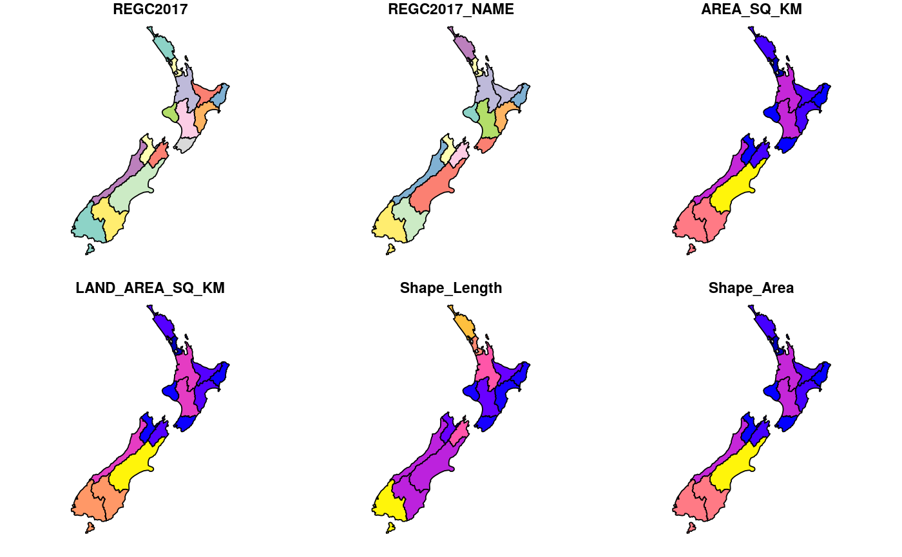

Polygons representing the 16 regions of New Zealand (2017). See https://en.wikipedia.org/wiki/Regions_of_New_Zealand for a description of these regions and www.stats.govt.nz for information on the data source
nz
FORMAT:
REGC2017_NAME Name
AREA_SQ_KM Area
LAND_AREA_SQ_KM Land area
Shape_Length Perimeter length (m)
Shape_Area Area (meters squared)
geometry sfc_MULTIPOLYGON
# NOT RUN { u_nz = "http://www3.stats.govt.nz/digitalboundaries/annual/ ESRI_Geodatabase_2017_Digital_Boundaries_Generalised_Clipped.zip" download.file(u_nz, destfile = "nz.zip") unzip("nz.zip") st_layers("2017 Digital Boundaries Generalised Clipped.gdb/") nz = st_read("2017 Digital Boundaries Generalised Clipped.gdb", layer = "REGC2017_GV_Clipped") object.size(nz) / 1000000 # ~15 MB nz = rmapshaper::ms_simplify(nz, keep = 0.001) object.size(nz) / 1000 # 41 KB! nz = nz_orig[1:16, ] # remove areas outside nz territory # Tidy-up unlink("2017 Digital Boundaries Generalised Clipped.gdb/", recursive = TRUE) unlink("nz.zip") # }